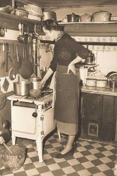

Our History

The Usual is a historic, family-owned business built on over 70 years of baking, love, and community. It started with a mother and daughter who simply loved to bake, making pastries right on their home kitchen counter. Their treats were so popular with neighbours that they soon opened a real, local bakery.
Over the decades, the bakery has been passed down through the family. Each generation has kept the original recipes and the friendly, neighbourhood feel alive.
Our Mission
To honour the bakery's rich history, keep its warm and cozy atmosphere, continue sharing the family's famous pastries, and provide custom, memorable baked goods for every occasion.
Our Philosophy
We believe every celebration deserves a cake made with the same care as a family recipe passed down at home. That means fresh ingredients, recipes tested over generations, and a personal touch on every order, whether it's a birthday for twenty guests or a wedding for two hundred.